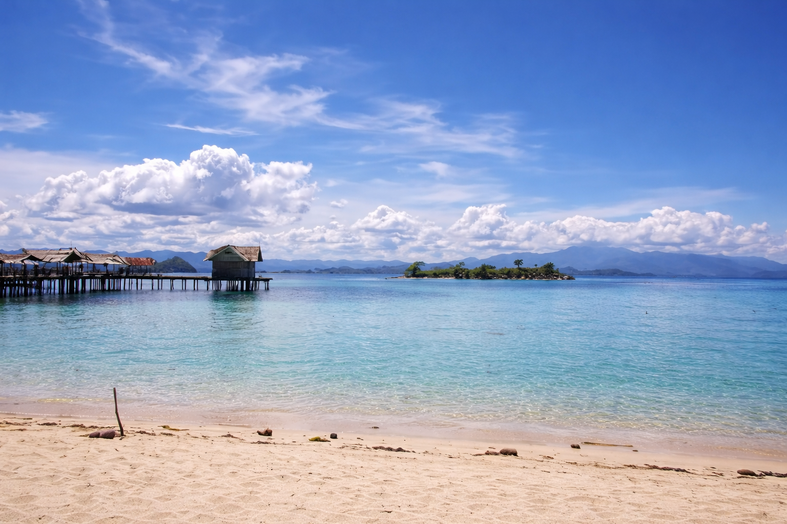
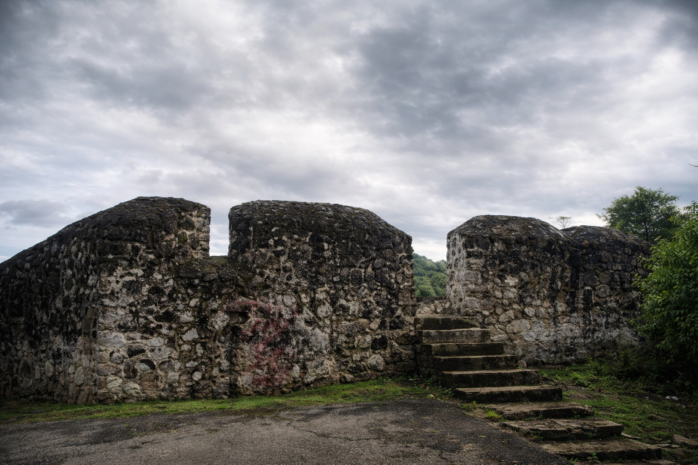
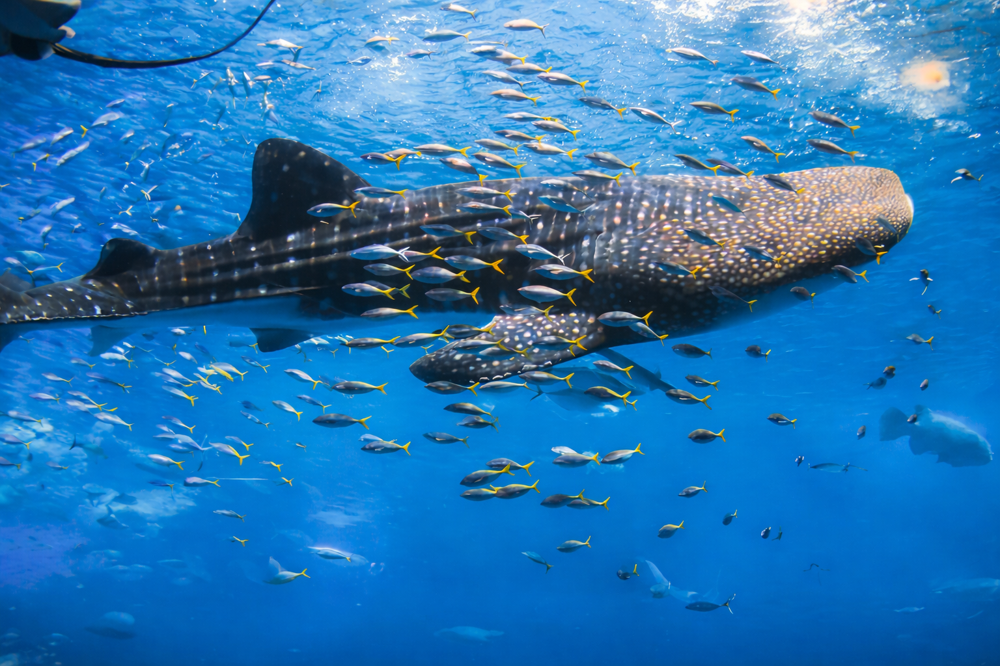
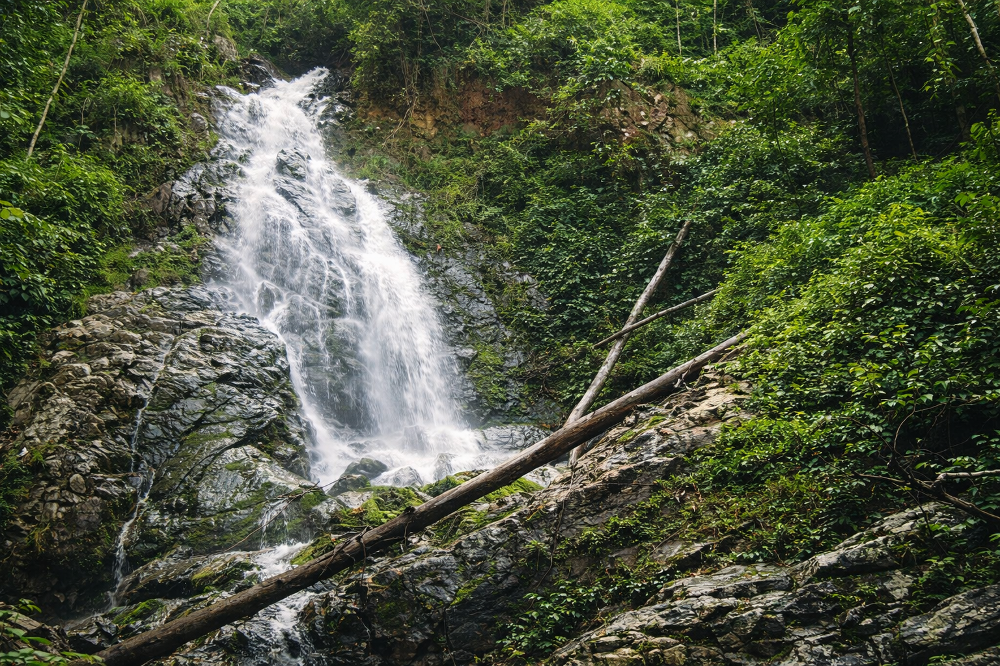

Region Name
- Top Attraction:
- Best Activity:
- Distance:
Kunjungi Pulau Tropis, Situs Sejarah, Area Perkotaan dan Wisata Alam Gorontalo
Nikmati Keindahan Di Pantai Pasir Putih Ikonik
Iconic: Saronde IslandSitus Sejarah Gorontalo
Iconic: Otanaha TemplePusat Perekonomian Dan Wisata Serta Kuliner Olahan Ikan Gorontalo
Iconic: Limboto



| Rute | Jarak | Dengan Mobil | Dengan Pesawat |
|---|---|---|---|
| Bandara → Pusat Kota | 30 km | 45 menit | - |
| Pusat Kota → Pulau Saronde | 65 km | 2 jam | - |
| Pusat Kota → Benteng Otanaha | 8 km | 20 menit | - |
| Jakarta → Gorontalo | - | - | 3 jam |
Let us help you craft the perfect journey to the Heart of Sulawesi.